Zurück zur Vorseite
(Mit der Maus auswählen)
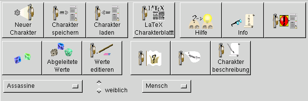
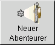
Neuer Abenteurer:
MAGUS wird für einen neuen Abenteurer vorbereitet. alle Daten eines vorhergehenden Abenteurers werden gelöscht
und auf die Default-Werte zurückgesetzt.
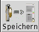
Abenteurer speichern:
Der aktuelle Abenteurer wird in einer xml-Datei gespeichert.
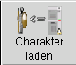
Abenteurer Laden:
Ein bereits vorhandener Abenteurer wird geladen.
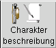
Abenteurerbeschreibung:
Es öffnet sich ein Fenster, in welchem eine Beschreibung des Abenteurers eingegeben und seperat ausgedruckt werden kann.
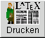
LaTeX-Abenteurerblatt:
Es wird eine LaTeX-Ausgabe des Abenteurerdokuments des aktuellen Abenteurers erzeugt und in eine
Postscript-Datei umgewandelt. Diese wird mittels 'gv' angezeigt. Dieses Dokument kann seperat
gedruckt und gespeichert werden. (In der Windowsversion möglicherweise anders)
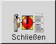
Schließen:
Magus wird beendet
Änderungen werden zur Zeit nicht(!) automatisch gespeichert
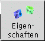
Grundwerte Würfeln:
Auswürfeln der Grundwerte:
Stärke, Geschicklichkeit, Gewandtheit, Konstitution, Intelligenz und Zaubertalent
Es stehen drei Verfahren zur Auswahl:
linke Maustaste: Es wird für jede Eigenschaft 2x gewürfelt und der höhere Wert automatisch übernommen
mittlere Maustaste: Es wird pro Eigenschaft 2x gewürfelt, der höhere Wurf wird von Hand einer
Eigenschaft zugewiesen
rechte Maustaste: Es wird 9x Gewürfelt, die 6 besten Würfe werden auf die Eigenschaften verteilt
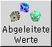
Abgeleitete Werte:
Die abgeleiteten Werte werden ausgewürfelt und berechnet.
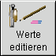
Werte editieren:
Die zuvor bestimmten Werte (im Wertebereich) können zum größten Teil individuell verändert
werden. Alternativ besteht hier die Möglichkeit, die Werte von vorneherin an per Hand einzugeben.
 Menü:
Menü:
Über das Menü lassen sich einige Grundlegende Eigenschaften von MAGUS steuern. Es ist jederzeit auch über
die rechte Maustaste aufrufbar. Weitere Informationen zum Menu gibt es auf dieser Seite.
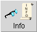
Info:
Hinter dem Info-Button verbirgt sich das Infofenster von MAGUS, welches bereits beim Programmstart zu sehen ist.
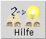
Hilfe:
Dieser Button führt zu einer kleinen Online-Hilfe.
Spezies auswählen:
Über dieses Menü wird die Spezies ausgewählt (Voreingestellt: Mensch).
Zusätzlich lassen sich hier noch das Geschlecht und die Herkunft des Abenteurers, resp. der Abenteurerin bestimmen.
Im Werte-Fenster werden die bereits gesetzten Werte angezeigt. Die Felder, für die noch keine Werte
vorhanden sind. bleiben leer.
Durch das Anwählen des Buttons 'Werte editieren' werden die Felder im Wertebereich editierbar.